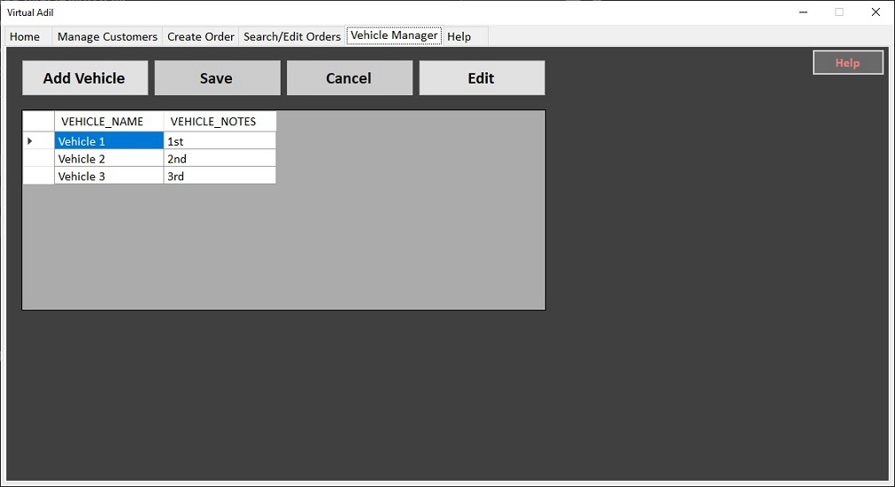

Virtual Adil is a software program created by DaphAdil Consulting for keeping track of a shipping company's clients and work orders. This help page will provide you with instructions on how to use the various components of the software and diagrams showing the function of certain components.
This is the first page the user will see when they launch the application, sometimes known as a splash screen. This page simply acts as a welcoming graphic for the user, and a notification that it is ready to use. To start using Virtual Adil, click on one of the other tabs at the top of the application window.

The Manage Customers tab is where new customers are added to the Customer table. The user can also use this window to make changes to existing customer records. The left side of the window allows the user to interact with each field of data, while the right side displays a list of existing records in the Virtual Adil database, along with controls that allow the user to sort and search the fields.
Note: Database Terms
A full customer entry (including name, address, phone number, etc.) is referred to as a record in this document.
A single bit of information (like Zip Code) is called a field. A full customer record is made up of ten fields.
All of the records combined make up the full Customer table, which, like the Orders table, is part of the Virtual Adil database.
If the customer information is not immediately visible in the Table View, you can use the Search feature at the top of the window to find it and confirm that it has been entered (read more about Search below).
Note: See the Visual Reference below for a description of each element in this tab.

| Number | Field Name | Purpose |
|---|---|---|
| 1 | First Name | Customer's first name |
| 2 | Last Name | Customer's last name |
| 3 | Phone # | Must be 10 digits. Stores a phone number for contact info. |
| 4 | Must have proper form. Stores the customer email. Email cannot be entered without an "@" sign and "." in the proper place. | |
| 5 | Company | Company the customer represents |
| 6 | Address | Street Address of the customer, used for billing |
| 7 | City | City where the customer is located |
| 8 | State | State where the customer is located |
| 9 | Zip Code | Customer's ZIP Code |
| 10 | Broker Yes/No? | Designates this contact as a broker. Doing this will allow you to distinguish and sort brokers separately if needed. |
| 11 | Add New Customer button | This button is used to start the process of adding a new customer. Until this button is pressed, the customer information fields will remain inactive. |
| 12 | Edit Customer button | Select a record before pressing this button. This button will give the user access to edit the currently selected record in the Table View. |
| 13 | Save Button | The Save button will save the current changes in the customer information fields. This button becomes active when Adding a new customer or when Editing an existing customer. |
| 14 | Cancel Button | The Cancel button cancels the Add or Edit operation, clearing out the customer information fields and leaving the database table unchanged. |
| 15 | Search Box | Use the Search box to find customers. You can search by a word in any field. You can also sort the Customers by field by clicking on the column headers. |

The Create Orders tab is where new orders are added to the Orders table.
Across the top is customer information, which can be pulled in by selecting a customer in the dropdown menu in the far upper left.
Pickup and Dropoff Information specify the address information for the work order's origin and destination, and can be quickly filled out by using the Copy Customer Data control.
Booking Date keeps track of the date the order was received, and Pickup/Delivery Date reflect the date of pickup and dropoff. All three dates must be in the proper order (dropoff date cannot be before pickup date, for example).
Description and Special Instructions in the lower right are for any notes the user would like to add to the order.
Finally, the Order Status allows the user to flag a job as Pending, In Transit, Delayed, Complete, or Cancelled. The user can then use the Search Orders tab to search for orders by this status (for example, list all jobs that are Complete).
Note: Database Terms
A full work order entry (including pickup, dropoff, status, etc.) is referred to as a record in this document.
A single bit of information (like Booking Date) is called a field. A full work order record is made up of fifteen fields.
All of the records combined make up the full Orders table, which, like the Customers table, is part of the Virtual Adil database.
Once the customer information has been pulled in, it fills the top two rows of fields. This information can be edited here for use in the next step.
At any time, you can hit Cancel to discard your changes and leave the database unchanged.

| Number | Field Name | Purpose |
|---|---|---|
| 1 | Customer | Customer's name. Also pulls in corresponding data from the Customer table. |
| 2 | Company | Customer's company name. |
| 3 | Phone | Must be 10 digits. Stores a phone number for contact info. |
| 4 | Must have proper form. Stores the customer email. Email cannot be entered without an "@" sign and "." in the proper place. | |
| 5 | Invoice # | Invoice # is a user-editable field for entering order or invoice numbers for instant reference. |
| 6 | Address | Street Address of the customer, used for billing |
| 7 | City | City where the customer is located |
| 8 | State | State where the customer is located |
| 9 | Zip | Customer's ZIP code |
| 10 | Order # | For database use only; do not edit |
| 11 | Vehicle Used | Specifies the vehicle used to complete the order. |
| 12-13 | Copy Customer Data | Select a record before pressing this button. When clicked, this copies the address information from the top fields into either Pickup or Dropoff Information. |
| 14-15 | Pickup/Delivery Address | Origin and destination street addresses for the work order |
| 16-17 | Pickup/Delivery City | Origin and destination cities |
| 18-19 | Pickup/Delivery State | Origin and destination state |
| 20-21 | Pickup/Delivery Zip | Origin and destination ZIP |
| 22 | Booking Date | The date upon which the job was accepted |
| 23 | Pickup Date | The date when the shipment needs to be picked up |
| 24 | Delivery Date | The due date for shipment dropoff |
| 25 | Order Status | Allows the user to mark the work order as Pending, In Transit, Delayed, Complete, or Cancelled |
| 26 | Create Order Button | Initiates order creation and unlocks the Customer dropdown in the upper left to create a new order |
| 27 | Save Order Button | Saves the new work order to the database. Incomplete fields may stop this button from saving until the fields are filled out. |
| 28 | Cancel Button | Cancels order creation, making no changes to the database. |
| 29 | Description Box | Box for user-readable info about the cargo, or anything else. |
| 30 | Special Instructions Box | Box for user-readable special instructions concerning scheduling and directions for the work order. |
The Search/Edit Orders tab allows the user to search all created Work Orders and edit them if needed. To search an order, type any text into the Search Orders box and hit Enter. The matching records will be displayed below in the Table View.

| Number | Field Name | Purpose |
|---|---|---|
| 1 | Booking Date | The date that the job or work order was accepted by the user's organization. |
| 2 | Pickup Date | The date that the shipment must be picked up. |
| 3 | Delivery Date | The date by which the shipment must be delivered. |
| 4 | Order # | Not Editable. Database number that refers to the Order in the database and cannot be changed. |
| 5 | Customer ID | Not Editable. Database number that refers to the Customer in the database and cannot be changed. |
| 6 | Vehicle Used | The vehicle used to carry out the Work Order. |
| 7 | Invoice # | User-editable reference number for tracking each Work Order. |
| 8 | Order Status | Current status of the Work Order - Pending, In Transit, Delayed, Complete, or Cancelled. |
| 9 | Customer | Customer's full name associated with the Work Order. |
| 10 | Pickup Address | The address where the shipment will be picked up for the job. |
| 11 | Pickup City | The city where the shipment will be picked up. |
| 12 | Pickup State | The state in which the shipment will be picked up. |
| 13 | Pickup Zip | The ZIP Code of the shipment origin. |
| 14 | Delivery Address | The address where the shipment will be dropped off for the job. |
| 15 | Delivery City | The address where the shipment will be dropped off. |
| 16 | Delivery State | The state in which the shipment will be dropped off. |
| 17 | Delivery Zip | The ZIP Code of the shipment destination. |
| 18 | Description Box | User-editable field for any additional info such as cargo description or number of pieces. |
| 19 | Special Instructions | User-editable field for any special delivery instructions such as "park in back" or "ask for Karen". |
| 20 | Search Orders Box | Type a word or phrase into this box to search the existing Work Orders for a match. You can also sort the Work Orders by field by clicking on the column headers. |
| 21 | Edit Order Button | Click this button to unlock the fields to edit the currently selected record in the Table View. |

The Vehicle Manager allows the user to create and store records of vehicles the company owns. They can then be associated with Work Orders as needed.
| Number | Field Name | Purpose |
|---|---|---|
| 1 | Add Vehicle Button | Customer's first name |
| 2 | Save Button | Customer's last name |
| 3 | Cancel Button | Must be 9 digits. Stores a phone number for contact info. |
| 4 | Edit Button | Must have proper form. Stores the customer email. Email cannot be entered without an "@" sign and "." in the proper place. |
| 5 | Table View | List of existing records. You can sort it by any particular field by clicking on column headers. Records displayed here will change based on Search results. |
| 6 | Help Button | Takes you to the relevant section of this Help Page, depending on where the Help Button was clicked. |